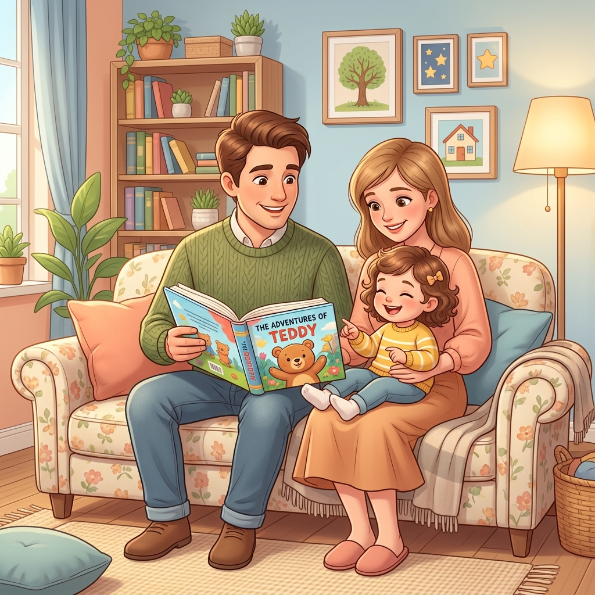
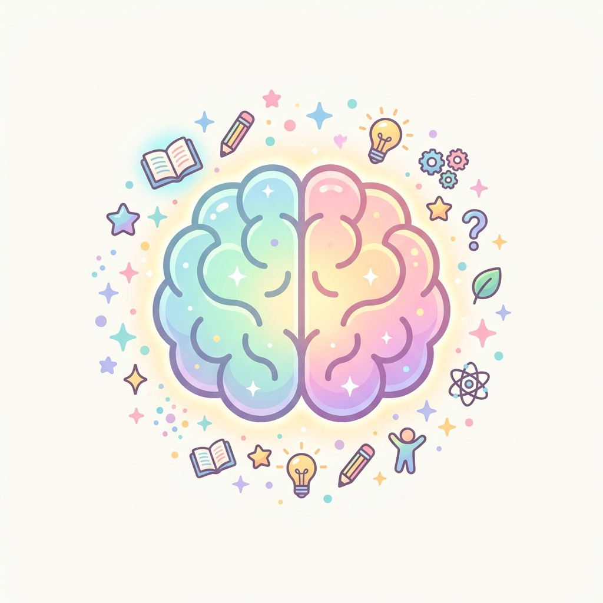
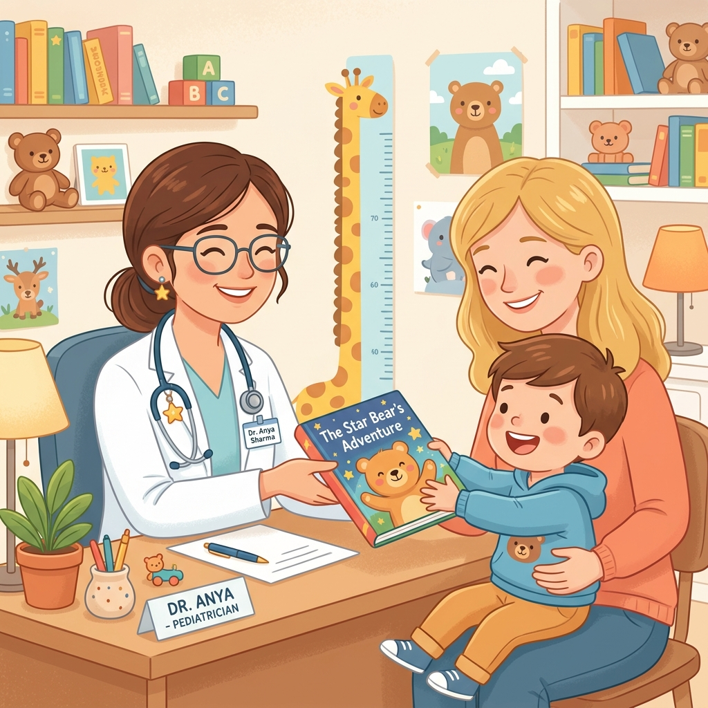
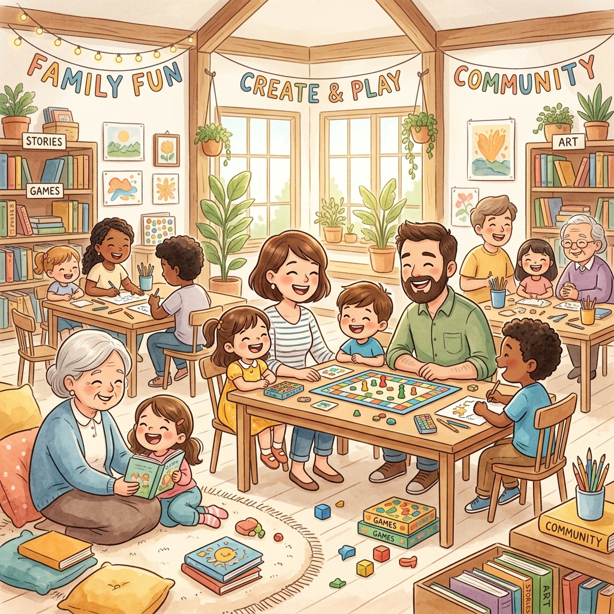

關鍵在於「共」這個字，代表著陪伴與一起參與。
功能性核磁共振掃描（fMRI）證實，共讀時大腦中的聽覺、視覺與語言區塊會特別活化，是促進發育的最佳處方。
透過對話與提問，能顯著提升幼兒的詞彙表達量、語言理解與句法複雜度。
實證指出，共讀能減少不專注行為，是注意力缺陷過動症（ADHD）絕佳的早期介入訓練。
孩子能認識自己的情緒，學習調節焦慮與憤怒。透過學習，增進自我的社會適應力。
每天10分鐘的高品質陪伴，讓書本成為您與孩子間最棒的溝通橋樑，並建立極具安全感的緊密依附關係。
透過多樣化的插畫與天馬行空的故事情節，啟發幼兒無窮的好奇心，在美好的畫面中潛移默化培養美感。


找個好時機（吃飽、睡飽、心情好）；大人小孩都要覺得有趣；最重要的是：兩歲以下零 3C！
王中豪醫師笑著說：「爸爸媽媽別氣餒，你要想想，你的孩子交到好朋友了！那本書就是他的好朋友，他當然每天都想跟好朋友玩呀！」在快速成長的階段，孩子每天都能在同一本書裡發現新的驚喜。
「我的孩子是特殊生，平日已上了許多早療課程...直到來到婦幼院區參加親子共讀活動。這裡不像一般治療課，醫師與治療師接住了孩子的狀況，也接住了身為家長的我們，大幅減少了我們育兒的挫折感。」
